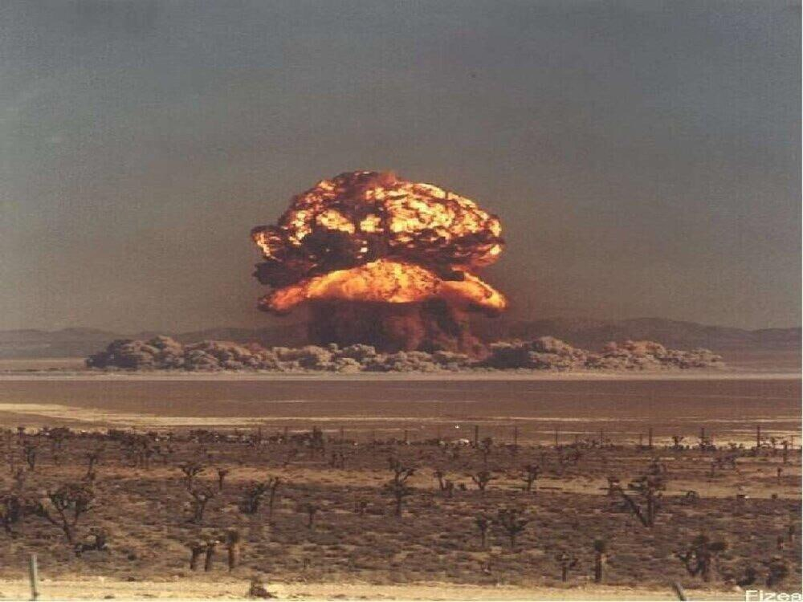

Кирилл Иванович Щёлкин — создатель, главный конструктор и научный руководитель НИИ 1011 (c
1992
года
—
Российский
федеральный ядерный центр —
Всероссийский научно-исследовательский институт технической
физики), трижды
Герой Социалистического Труда (
1949
,
1951
,
1953
), Лауреат
Ленинской (
1958
) и трех
Государственных
премий
СССР.
Вклад в Советский ядерный проект:
Кирилл Щелкин - один из ключевых участников советского атомного проекта, входивший в
“курчатовскую
пятерку”.
Он участвовал в создании
первой советской атомной бомбы и
первого термоядерного заряда. Именно
Щелкин принял
первое атомное устройство
РДС-1 и установил инициатор нейтронов в плутониевую сферу на
Семипалатинском
полигоне в
1949
году. После работы в
Арзамасе-16, он стал первым
научным руководителем и главным
конструктором НИИ-1011 в
Снежинске.
В КБ-11 (Арзамас-16) он был заместителем главного
конструктора
Юлия
Харитона и возглавлял научно-исследовательский сектор, собрав первый штат из
70 ученых.
Воспоминания Кирилла Ивановича Щёлкина:
Ежедневно днем и ночью проводилось более
10 взрывов, от которых подпрыгивал их дом и звенели стекла.
Кирилл
Иванович приезжал с работы поздно, ложился в кабинете на диване, рядом на стуле стоял телефон. После
очередного взрыва, через некоторое время, раздавался звонок,
Щёлкин вставал, садился в дежуривший
около дома
«газик» и уезжал на работу. Спать удавалось по
4-5 часов в сутки с урывками. Ученый бился над
тем, чтобы с
помощью взрыва шарового заряда из обычного взрывчатого вещества равномерно обжать металлический шар,
помещенный в центр заряда.
Эксперимент тогда решал все. Из всей вычислительной техники были тогда арифмометры, ну и
логарифмические линейки.

Приближалась дата испытания первой советской атомной бомбы –
изделия РДС-1 –
29.08.49
года.
21
августа
участники испытаний привезли на литерном поезде на
Семипалатинский полигон боевой плутониевый
заряд и
три нейтронных инициатора.
29
августа в
4.00 утра в центр поля, к башне,
после опечатывания системы
автоматики и разъемов на подрывной линии, прибыли
Щелкин и
Матвеев с боекомплектом
электродетонаторов.
Из сборочной мастерской по рельсовому пути специалисты вывезли изделие и установили его в клети
грузового подъемника башни…
Годы спустя Кирилл Щелкин поделился с сыном, что башня на высоте 30 метров, где находились
люди и
изделие, раскачивалась под воздействием порывов ветра с амплитудой 1 метр.
Капсюли-детонаторы содержали
ВВ и могли сработать от удара, находясь вне изделия или специальной тары. Никогда их установка, а до
этого были проведены три генеральных репетиции, не проводилась в условиях такой «качки». Природа
сопротивлялась как могла. Этой ответственной и опасной операцией в присутствии трех генералов руководил
рядовой Щелкин.